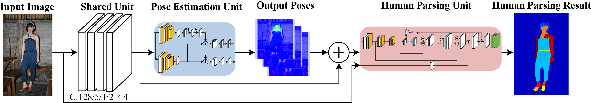
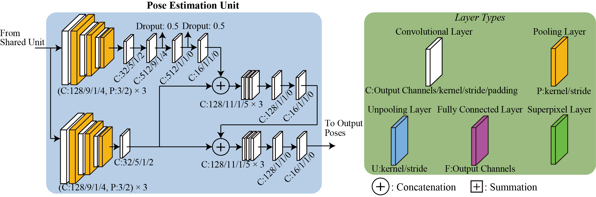
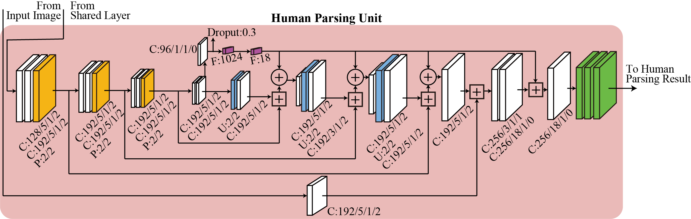

|  |
|  |
|  |
Abstract
Human parsing is a fundamental task to estimate semantic parts in a human image such as face, arm, leg, hat, and dress. Recent deep-learning based methods have achieved significant improvements, but collecting training datasets of pixel-wise annotations is labor-intensive. In this paper, we propose two solutions to cope with limited dataset. First, to handle various poses, we incorporate a pose estimation network into an end-to-end human parsing network in order to transfer common features across the domains. The pose estimation network can be trained using rich datasets and feed valuable features to the human parsing network. Second, to handle complicated backgrounds, we increase the variations of background images automatically by replacing the original backgrounds of human images with those obtained from large-scale scenery image datasets. While each of the two solutions is versatile and beneficial to human parsing, their combination yields further improvement.
Publications:
Takazumi Kikuchi, Yuki Endo, Yoshihiro Kanamori, Taisuke Hashimoto, and Jun Mitani, "Transferring pose and augmenting background for deep human-image parsing and its applications," Journal of Computational Visual Media, 12 pages, 2018. [pdf(open access)]
Takazumi Kikuchi, Yuki Endo, Yoshihiro Kanamori, Taisuke Hashimoto, and Jun Mitani, "Transferring Pose and Augmenting Background Variation for Deep Human Image Parsing," Proc. of Pacific Graphics 2017, 2017, to appear (short paper).
菊池 敬済, 遠藤 結城, 金森 由博, 橋本 泰輔, 三谷 純, "ポーズ情報の考慮と背景データの拡張によるCNN を用いた人物画像の意味的領域分割," Visual Computing／グラフィクスと CAD 合同シンポジウム 2017, 2017/6/23-24. (口頭発表)